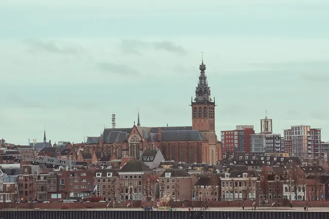

Tandarts in Nijmegen: praktijken met plek voor nieuwe patiënten, per wijk
Bijgewerkt op 22 november 2026.
Een tandarts vinden die nog plek heeft, is in Nijmegen niet altijd makkelijk. Daarom zochten we per wijk de praktijken op die op hun eigen site zeggen dat ze nieuwe patiënten aannemen. We zetten er ook bij wie extra aandacht heeft voor angstige patiënten of voor kinderen.

Zo hebben we gekozen
We lazen in november 2026 de websites van de tandartsen in onze bedrijvengids. In deze gids staan praktijken die op dat moment zeiden dat ze nieuwe patiënten aannemen. Dat kan snel veranderen, dus kijk op de site of bel even voordat je je inschrijft.
Nijmegen-Oost
Tandartspraktijk Najem: ook Engelstalig
Aan de Prins Hendrikstraat werken drie algemeen tandartsen en een mondhygiënist. De praktijk neemt nieuwe patiënten aan: je schrijft je in via de site en plant daarna je eerste afspraak.
Je kunt er in het Nederlands en het Engels terecht. Op maandagavond houdt een tandprotheticus spreekuur, handig als je een kunstgebit hebt.
Goed voor: internationale studenten en werkers.
Villa Westhof: je eigen vaste tandarts
In een villa aan de Berg en Dalseweg kies je zelf je vaste tandarts of mondhygiënist. Naast controles doen ze wortelkanaalbehandelingen, kronen, facings en orthodontie.
Er is een kindertandarts, en de praktijk heeft aandacht voor mensen die erg angstig zijn.
Goed voor: gezinnen die alles onder één dak willen.
Ammersingh: bij pijn vaak dezelfde dag
In de Javastraat werken meerdere tandartsen, assistenten en mondhygiënisten samen. De nadruk ligt op voorkomen, en ze nemen de tijd voor je.
Ben je er al lang niet geweest of zie je er tegenop, dan ben je ook welkom. Heb je pijn, dan kun je tijdens openingstijden meestal dezelfde dag langskomen.
Goed voor: wie jaren niet bij de tandarts is geweest.
Tandarts Smile: begonnen voor angstige patiënten
Praktijkhouder William werkte eerder in de psychiatrie, en de praktijk is juist begonnen met zorg voor mensen die bang zijn voor de tandarts. Er zijn open en dichte behandelkamers.
Nieuwe patiënten zijn welkom, maar reken op minstens twee maanden wachttijd. De eerste twee keer betaal je zelf en declareer je bij je verzekeraar.
Goed voor: wie echt opziet tegen de tandartsstoel.
Zuid en rond het centrum
Mondzorg Kastanjelaan: gratis parkeren
Mondzorg Kastanjelaan neemt nieuwe patiënten aan via een online inschrijfformulier. Het team richt zich op voorkomen en heeft aandacht voor kinderen.
Je kunt er ook in het Engels terecht. De praktijk is rolstoeltoegankelijk, en je parkeert gratis op het eigen terrein.
Goed voor: gezinnen met kinderen.
Tandzorg Nijmegen: op maandag tot zeven uur
Aan de Willemsweg kun je je volgens de site direct inschrijven als nieuwe patiënt. Je komt er voor controles, gebitsreiniging en vullingen.
Voor implantaten, kronen en wortelkanaalbehandelingen werkt de praktijk samen met Tandartspraktijk Najem. Op maandag is de praktijk tot zeven uur 's avonds open.
Goed voor: wie overdag moeilijk weg kan.
Nijmegen-West
Tandartspraktijk Cornelissen: voor het hele gezin
In een nieuwbouwpand aan de Marialaan werkt Kelly Cornelissen met meerdere tandartsen, een mondhygiënist en assistentes. De praktijk neemt nieuwe patiënten aan.
Kelly heeft affiniteit met kinderen en met mensen die het spannend vinden. Je kunt ook terecht voor kindertandheelkunde en een kunstgebit.
Goed voor: gezinnen in West.
Dukenburg en Lindenholt
Mondzorgcentrum Takenhofplein: met eigen orthodontist
Aan het Takenhofplein kun je volgens de praktijk als nieuwe patiënt terecht, voor de tandarts en voor orthodontie. Onder één dak werken tandartsen, mondhygiënisten en een orthodontist.
Je komt er ook voor implantaten, een klikgebit of tanden bleken. Ben je gespannen, meld dat dan, zodat ze er extra tijd voor nemen.
Goed voor: wie ook een beugel nodig heeft.
Mondzorg Lindenholt: vooraf weten wat het kost
Oprichter Shwan Rasheed groeide zelf op in Lindenholt en geeft les aan het Radboudumc. De praktijk neemt nieuwe patiënten aan, en je schrijft je online in.
Je krijgt vooraf uitleg over wat er gebeurt en wat het kost. Er zijn ook doorzichtige beugels en klikgebitten.
Goed voor: wie graag precies weet waar hij aan toe is.
Lent en Nijmegen-Noord
Fortuna: in gezondheidsplein De Boog
In De Boog werken tandartsen, mondhygiënisten en preventie-assistenten samen. Je komt er voor controles, maar ook voor een onzichtbare beugel of facings.
Kinderen zijn welkom, de praktijk is rolstoeltoegankelijk en je parkeert in de garage onder het gebouw.
Goed voor: gezinnen in de Waalsprong.
Alleen voor kinderen
Kindermondzorg Nijmegen: vanaf zes maanden
Deze praktijk richt zich alleen op kinderen van 0 tot 18 jaar. Rond zes maanden is je kind al welkom, en dat eerste gesprek gaat vooral over poetsen, speen en eten.
Je parkeert en gaat naar binnen via de Zwanenstraat. Bijna alle behandelingen worden tot achttien jaar vergoed.
Goed voor: ouders die gaatjes willen voorkomen.
Ook goed
- Jeugdtandarts Waalsprong aan het Thermionpark in Lent, voor kinderen.
- Mondzorg Brush naast station Lent: alleen een mondhygiënist, op donderdag tot 's avonds.
- De Mondhygiënist aan de Kanunnik Mijllinckstraat neemt ook nieuwe patiënten aan.
Pijn buiten openingstijden? Bel dan eerst je eigen praktijk: het bandje zegt welke spoeddienst die avond of dat weekend dienst heeft.
Veelgestelde vragen
Welke tandarts in Nijmegen neemt nieuwe patiënten aan?
In november 2026 zeiden onder meer Najem, Villa Westhof, Ammersingh, Tandarts Smile, Mondzorg Kastanjelaan, Tandzorg Nijmegen, Cornelissen, Takenhofplein, Mondzorg Lindenholt en Fortuna dat ze nieuwe patiënten aannemen. Kijk op de site van de praktijk of dat nog zo is.
Welke tandarts helpt angstige patiënten?
Tandarts Smile aan de Daalseweg is juist begonnen met zorg voor angstige patiënten. Ook Villa Westhof, Ammersingh en Cornelissen zeggen extra aandacht te hebben voor wie het spannend vindt.
Is er een tandarts voor alleen kinderen?
Ja, Kindermondzorg Nijmegen in Lindenholt en Jeugdtandarts Waalsprong in Lent richten zich op kinderen.
Kan ik in het Engels bij de tandarts terecht?
Bij Tandartspraktijk Najem en Mondzorg Kastanjelaan kun je in het Engels terecht.